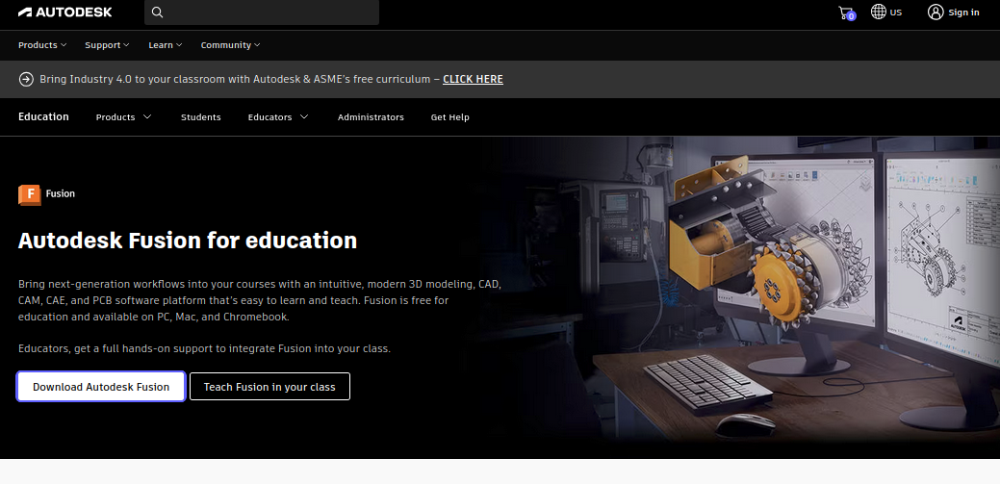
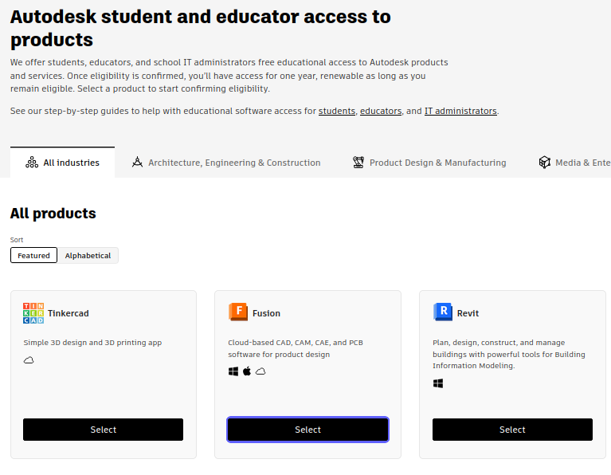
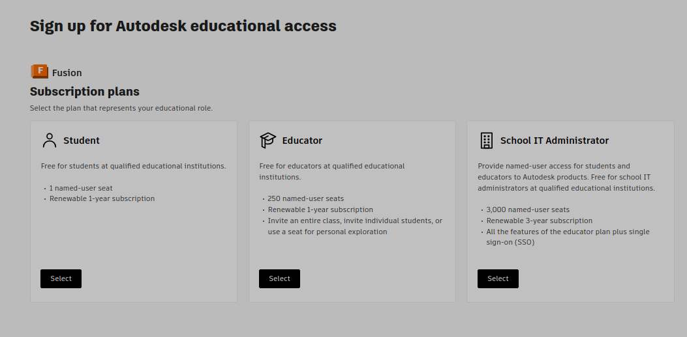
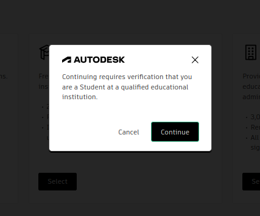
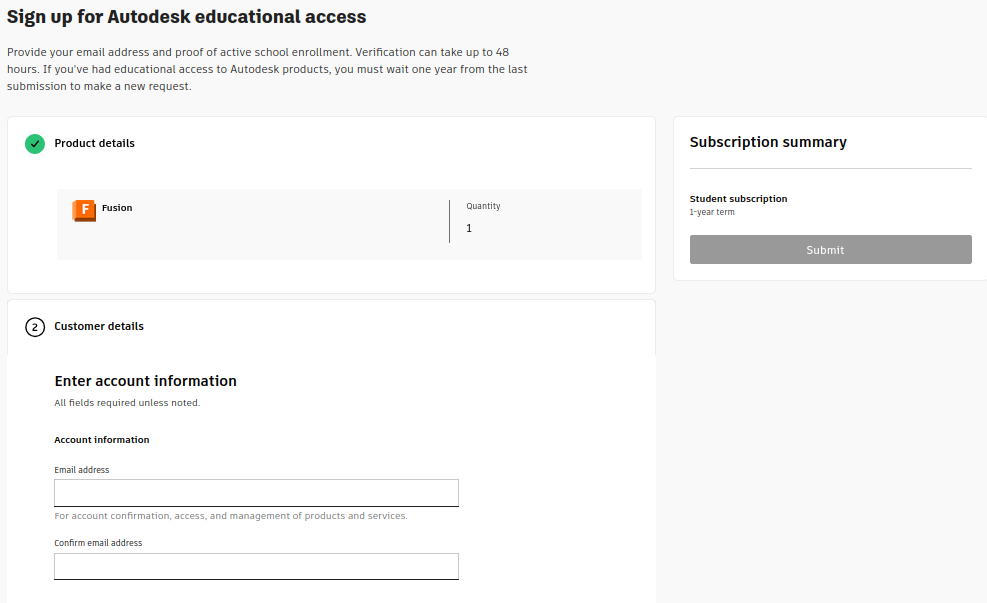

Introduction
==================================
To be able to get started with the different projects in this class you will have to
create a student account for Fusion 360.
This lab explains the steps to achieve that.
1 - Creating an Education Fusion 360 Account
==================================
- **Go to the following link** <a href="https://www.autodesk.com/education/edu-software/fusion">Fusiono 360 for Education</a>
- **Click on "Download Autodesk Fusion"**

- **Under the "All Products" section click the "Select" button for Fusion**

- **Select the "Student" option.**

- **Click Continue**

- **Fill out the form and click "Submit" (Make sure you use your Student email instead of your personal!)**

2 - Open Fusion 360
==================================
Once the form has been submitted and the account created.
[[y! Before you start!
Make sure you have downloaded and installed Fusion 360 on your computer.
The lab computers should already have Fusion 360 installed!
]]
- Open Fusiion 360
- Log in using the account you have just created
- Once logged in, give your account e-mail to the proffesor to add you to the class project.
<p>&nbsp;</p>
<p>&nbsp;</p>
Now you should be ready to get started with the class projects!
<p>&nbsp;</p>
<p>&nbsp;</p>